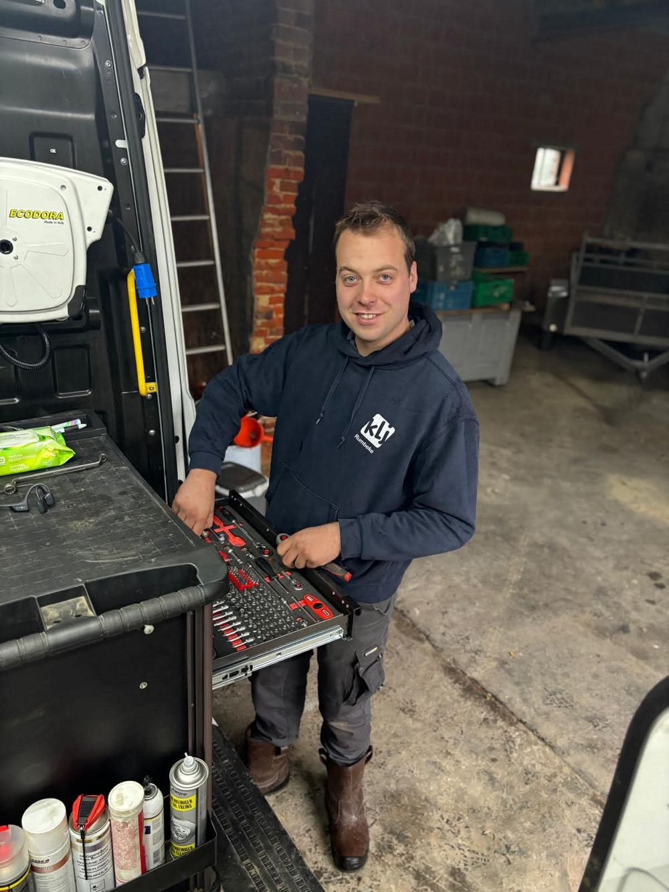
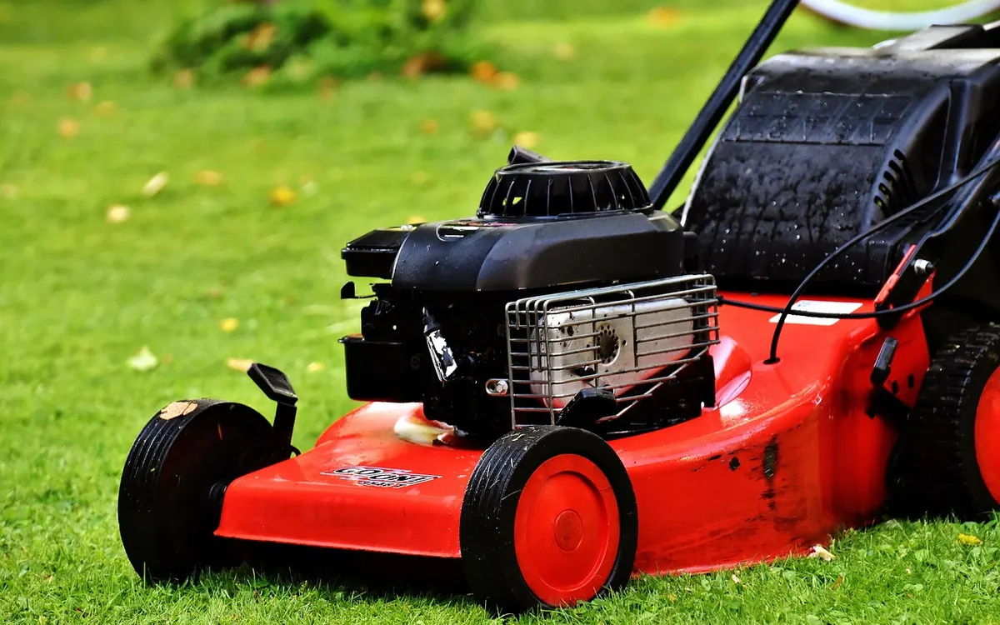
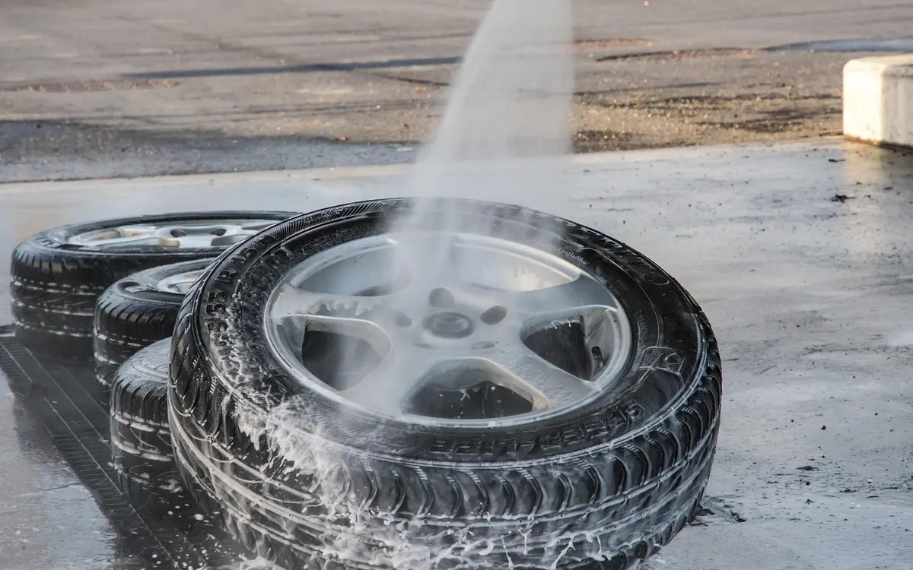
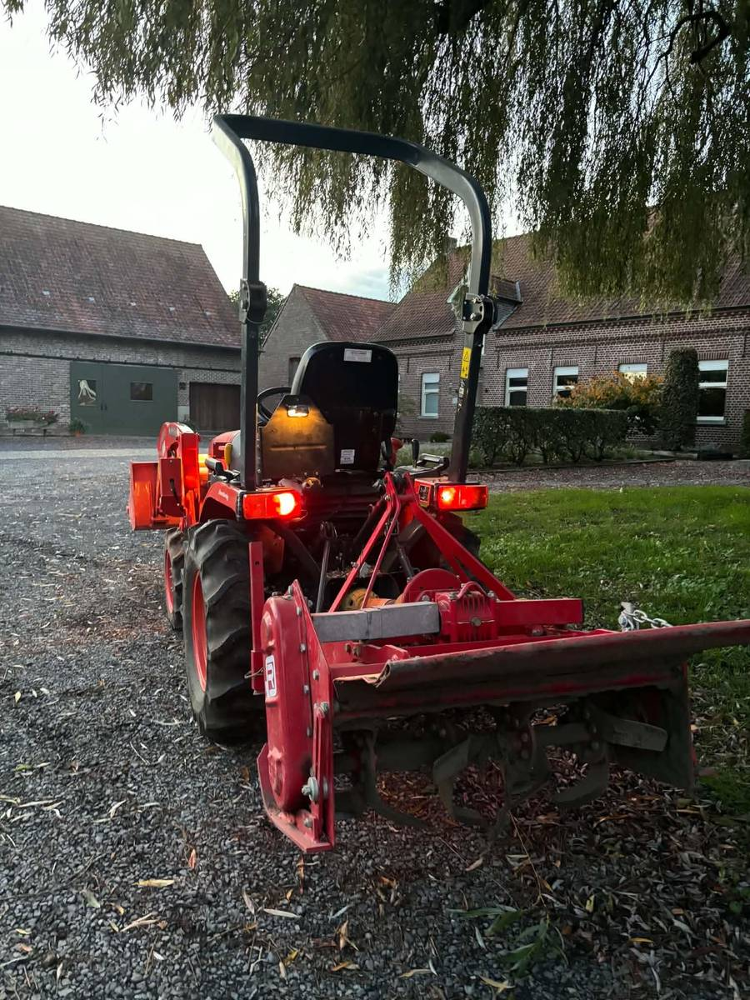
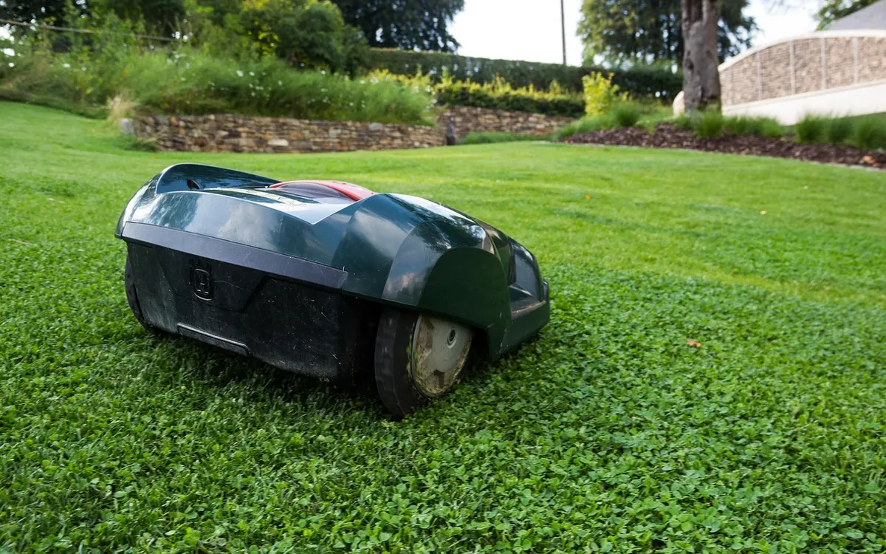

Onderhoud
Een vaste beurt voorkomt pannes.
Plan een beurtOnderhoud, herstelling en slijpdienst
In de eigen werkplaats in Meulebeke houdt Stef je tuin- en reinigingsmachines en je tractor in topconditie, waar je ze ook kocht.

Stef werkt met degelijk gereedschap en originele onderdelen. Voor de merken die we verkopen, maar evengoed voor grote namen zoals Honda en Husqvarna.
Een vaste beurt voorkomt pannes.
Plan een beurtStart ze niet meer, trekt ze slecht of maakt ze een vreemd geluid?
Vraag een herstelling aanScherpe messen en kettingen werken sneller en veiliger, en sparen je machine. Stef slijpt onder meer:
Geen aanhangwagen of geen tijd? Stef haalt je machine op en brengt ze terug zodra ze klaar is.
Ophalen en terugbrengen
Tuin- en tuinbouwmachines Grasmaaiers, zitmaaiers, robotmaaiers, kettingzagen, heggenscharen, bladblazers en meer.
Reinigingsmachines Hogedrukreinigers, stofzuigers, schrobmachines, veegmachines en meer.

In het voorjaar is het druk. Breng je grasmaaier, zitmaaier of robotmaaier in de winter binnen, dan is hij klaar wanneer het gras begint te groeien.
Plan een beurtLaat kort weten wat er scheelt. Stef belt of stuurt je een bericht om een moment af te spreken.